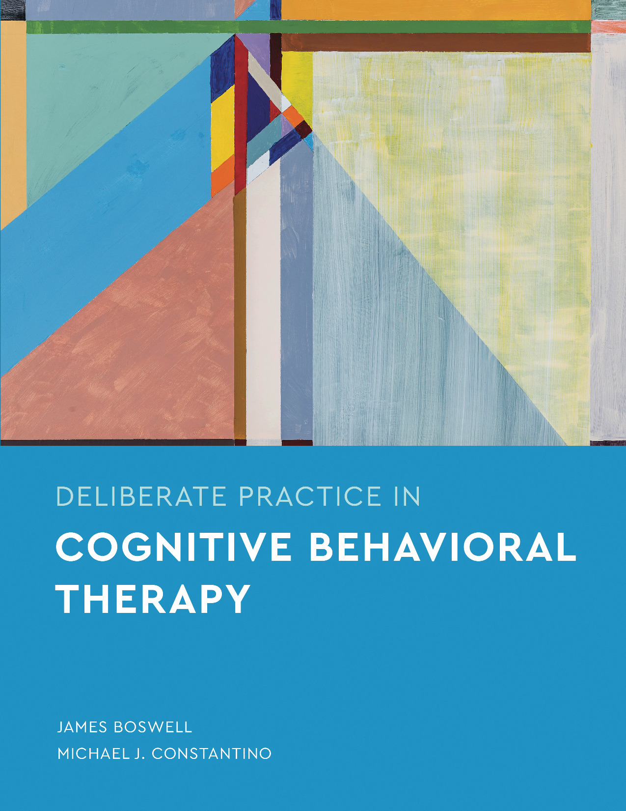

Pourquoi cette initiative ?
En Belgique, le troisième cycle en TCC constitue la voie reconnue pour acquérir une maîtrise rigoureuse de ces techniques. Elle dure trois ans, coûte plusieurs milliers d'euros, et son accès reste limité pour de nombreux professionnels.
Cette réalité pose une question éthique directe : comment pratiquer des techniques issues de la TCC auprès de patients sans y avoir été formé de manière suffisante ? Une formation mutuelle constitue notre réponse concrète à cette question, fondée sur l'engagement collectif et la responsabilité professionnelle.
Un programme structuré sur deux axes
Axe théorique
- Présentations mutuelles sur les concepts fondamentaux
- Lectures collectives d'ouvrages de référence
- Présentation et discussion d'articles scientifiques récents
- Ressources issues de plateformes reconnues
Axe pratique
- Jeux de rôle pour l'entraînement aux techniques
- Analyses réflexives en groupe sur des situations cliniques
- Recours potentiel à une supervision externe, selon les attentes du groupe

Ateliers de jeux de rôle
Les séances pratiques se déroulent en présentiel. Les participants s'entraînent aux techniques TCC en jouant alternativement les rôles de thérapeute, patient et observateur, avant d'analyser collectivement ce qui s'est passé.
Ce qu'est cette formation, et ce qu'elle n'est pas
En contrepartie, la formation est entièrement auto-administrée : aucun frais d'inscription, aucun coût. Elle repose sur l'engagement et la rigueur de ses participants, motivés par une exigence éthique vis-à-vis de leur pratique clinique.
Fonctionnement du groupe
Le groupe vise une dizaine de participants. Les décisions concernant le contenu, le rythme et l'organisation sont prises collectivement à l'aide d'outils de gouvernance participative : chaque membre contribue activement à la vie du groupe.
Rejoindre le groupe
Cette démarche vous intéresse ou vous souhaitez en savoir davantage ?
Contactez Grégoire Leeuwerck
formation.tcc@proton.me